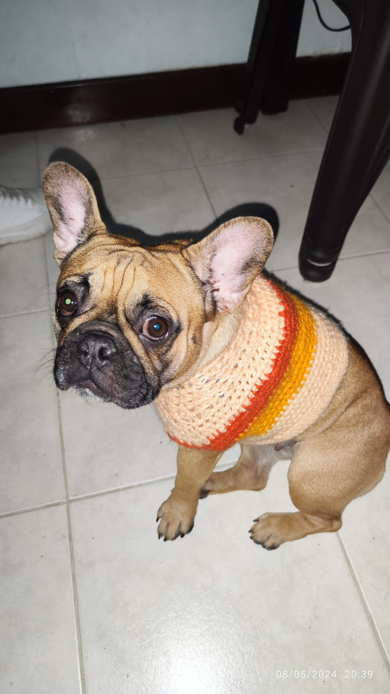
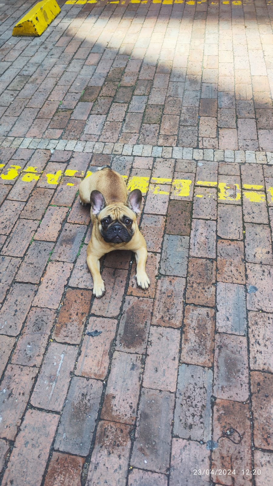
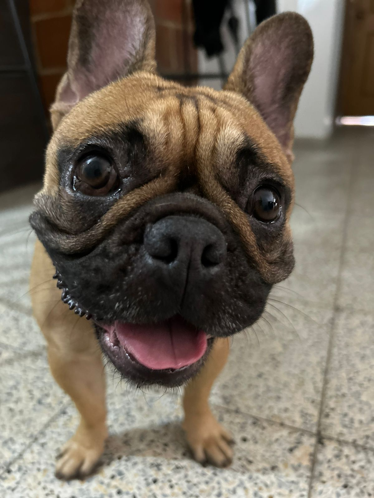
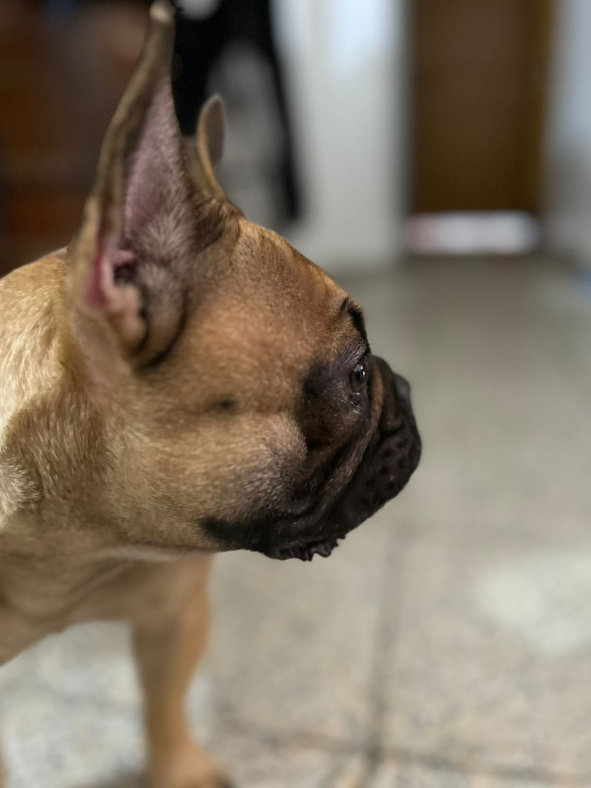
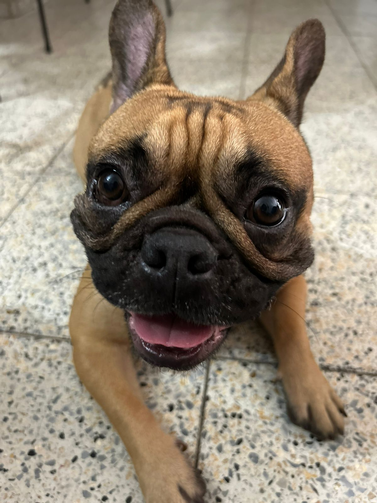

Con el fin de utilizar las herramientas y los conocimientos que se deben tener en html, se presenta la mascotas de la casa.
 Ella es Lupe, una perrita bulldog Francés que llegó este año a nuestras vidas. Lupe, es una perrita adoptada y tiene apróximadamente 3 años
Por acá hay otras imágenes de ella.
¡¡Lupe es toda una celebridad!!
  
Los principales hobbies de Lupe, son los siguientes:
el listado sale hacia el lado izquierdo
aquí, el enlace para adoptar perritos
clikea acá :)